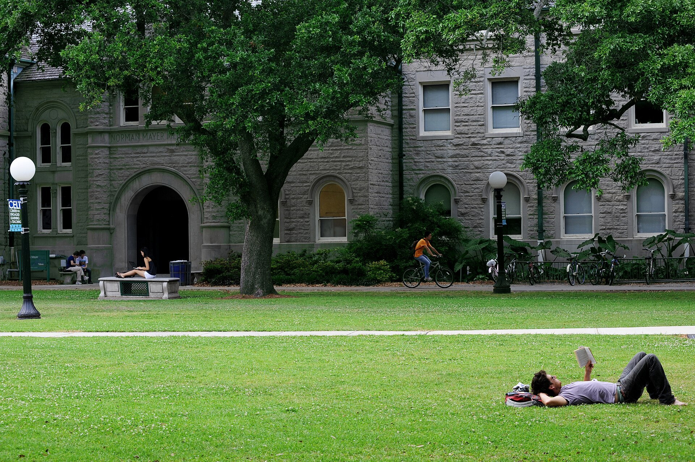

Финансовая помощь для высшего образования в США: FAFSA, гранты, стипендии и студенческие кредиты
Право на федеральную помощь для учёбы в колледже и университете США определяется одной заявкой — FAFSA (Free Application for Federal Student Aid). FAFSA бесплатна. С 2024–2025 учебного года её упростили: вместо Expected Family Contribution (EFC) введён Student Aid Index (SAI). Основная федеральная помощь: грант Pell (максимум 7 395 долларов на 2024–25 и 2025–26), FSEOG, программа Work-Study и кредиты Direct. Гранты не возвращаются; кредиты возвращаются с процентами. Право на федеральную помощь имеют граждане США, постоянные резиденты (грин-карта) и отдельные категории «имеющих право неграждан» (беженцы, получившие убежище, пэроли); студенты на F-1 и без документов, как правило, федеральную помощь получить не могут. По официальным источникам.

Высшее образование в США дорогое, но большинство студентов оплачивает его за счёт федеральной, штатной и вузовской помощи. В этом справочнике объясняется, как подать заявку, какие виды помощи существуют и на что имеют право иммигранты — граждане, обладатели грин-карты и лица с другим статусом, — строго по официальным источникам (Министерство образования США / studentaid.gov, NASFAA).
Что такое FAFSA
FAFSA — бесплатная заявка на федеральную студенческую помощь (Free Application for Federal Student Aid). Эта единая заявка определяет право на федеральные гранты, кредиты и work-study; штаты и колледжи также используют её для распределения своей помощи. FAFSA всегда бесплатна — подаётся на fafsa.gov; платить третьим лицам не нужно. Для подачи студент (и, если он зависим, один из родителей) создаёт бесплатный FSA ID (учётную запись Federal Student Aid), который служит юридической электронной подписью.
Упрощение 2024 года (SAI)
С 2024–2025 учебного года в рамках FAFSA Simplification Act форму упростили: стало меньше вопросов, а вместо Expected Family Contribution (EFC) введён Student Aid Index (SAI). SAI — показатель нуждаемости, а не сумма в долларах; он варьируется от −1 500 до 999 999, и чем ниже число, тем выше нуждаемость. После подачи вместо прежнего Student Aid Report выдаётся FAFSA Submission Summary. В новой системе родитель без номера социального страхования (SSN) также может создать FSA ID и заполнить свою часть — это позволяет подавать заявку семьям со смешанным статусом.
Виды федеральной помощи
Гранты не возвращаются. Грант Pell основан на нуждаемости, для студентов бакалавриата; максимум — 7 395 долларов на 2024–25 и 2025–26. FSEOG (дополнительный грант) — для исключительной нуждаемости, от 100 до 4 000 долларов в год, распределяется колледжем. Federal Work-Study даёт частичную занятость нуждающимся студентам. Кредиты возвращаются с процентами: Direct Subsidized (для нуждающихся бакалавров, проценты во время учёбы платит государство) и Direct Unsubsidized (независимо от нуждаемости, проценты начисляются всегда). Кредиты PLUS — для родителей бакалавров и для аспирантов/профессиональных студентов.
Годовые лимиты кредитов Direct (субсидируемые + несубсидируемые вместе): для зависимого бакалавра — 5 500 (1-й курс), 6 500 (2-й курс), 7 500 (3-й курс и далее) долларов; для независимого бакалавра — соответственно 9 500, 10 500 и 12 500. Совокупные лимиты: 31 000 долларов для зависимого бакалавра (субсидируемая часть до 23 000), 57 500 долларов для независимого бакалавра.
Кто имеет право: главное для иммигрантов
Право на федеральную помощь (обычно при наличии действующего SSN) имеют: граждане США; постоянные резиденты (грин-карта, I-551) и условные постоянные резиденты; а также «имеющие право неграждане» — лица, у которых в I-94 указано Refugee (беженец), Asylum Granted (предоставлено убежище), Parolee (с периодом пэроли не менее одного года), обладатель визы T или Cuban-Haitian Entrant. Имеющие право неграждане вносят в FAFSA свой A-Number.
Как правило, НЕ могут получить федеральную помощь: студенты на F-1 и большинство иностранных студентов — в FAFSA они отмечают «я не гражданин и не имеющий право негражданин» и не имеют права на федеральную помощь; студенты без документов, включая получателей DACA, не имеют права на федеральную помощь, хотя могут подать FAFSA (или заявку штата), чтобы открыть доступ к помощи штата или вуза.
Помощь штата, вуза и частные стипендии
Некоторые штаты предлагают помощь штата и/или оплату обучения по ставке штата (in-state) студентам без документов или с DACA — это резко различается по штатам (например, Калифорния, Техас, Нью-Йорк, Иллинойс и другие; обычно требуется окончание школы в этом штате). В Калифорнии California DREAM Act позволяет студентам без документов подавать заявку на помощь штата отдельно от FAFSA. Собственные (вузовские) стипендии колледжа и частные стипендии часто открыты независимо от гражданства — каждый колледж или спонсор устанавливает свои условия, поэтому уточняйте напрямую.
Сроки и порядок
Помощь предоставляется на каждый учебный год — нужно подавать новую FAFSA ежегодно. Федеральный срок — 30 июня на конец учебного года; после этого FAFSA того года не принимается. Приоритетные сроки штатов и колледжей обычно значительно раньше и различаются — рекомендуется подавать как можно раньше. Статус зависимости важен: зависимый студент указывает данные родителей; большинство аспирантов/профессиональных студентов автоматически считаются независимыми.
Внимание
Указанные суммы подтверждены для 2024–25 и 2025–26; суммы по Pell и другим программам в последующие годы могут измениться, поэтому проверяйте цифры конкретного года на studentaid.gov. FAFSA традиционно открывалась 1 октября, но в последние годы дата открытия сдвигалась — проверяйте точную дату каждого года. Списки штатов и правила для студентов без документов часто меняются — уточняйте в агентстве своего штата.